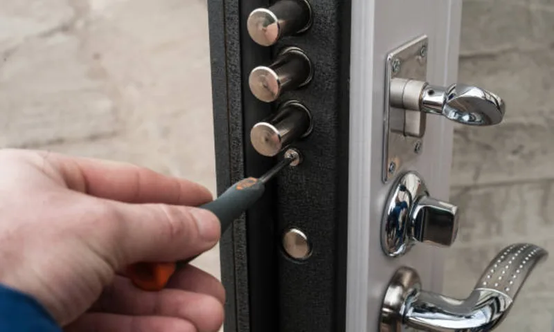
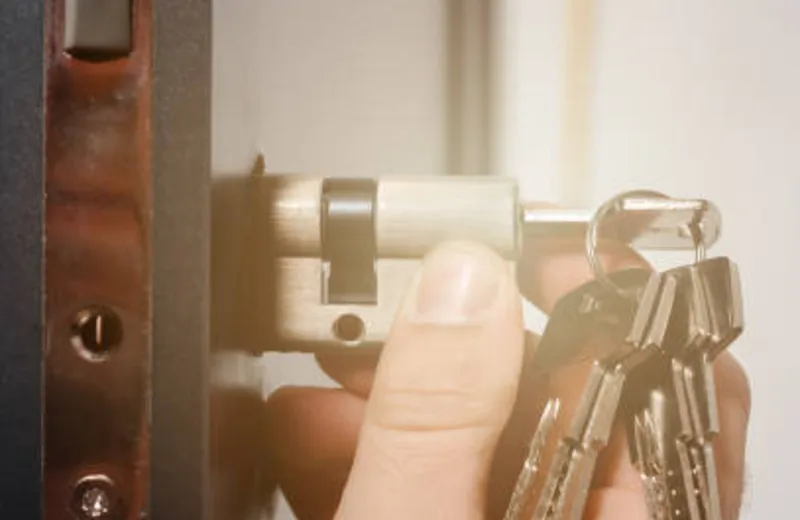

Аварийное вскрытие замков
Аккуратное вскрытие дверных замков без повреждений. Выезд мастера за 30 минут.
Подробнее arrow_forwardПриедем, покажем варианты замков, назовём точную цену — и только потом начнём работу. Без скрытых доплат, без повреждений двери, с гарантией до 12 месяцев.

| Услуга | Стоимость работы | Замок | Итого |
|---|---|---|---|
| Замена цилиндровой личинки Стандартная металлическая дверь | 700 ₽ | от 800 ₽ | от 1 500 ₽ |
| Замена сувальдного замка Металлическая дверь | 1 000 ₽ | от 1 000 ₽ | от 2 000 ₽ |
| Замена замка в деревянной двери Межкомнатная или входная деревянная | 800 ₽ | от 700 ₽ | от 1 500 ₽ |
| Установка замка повышенной секретности Класс А: Mul-T-Lock, CISA, EVVA | 1 200 ₽ | от 3 500 ₽ | от 4 700 ₽ |
| Замена замка после взлома Включает осмотр и оценку повреждений | 1 500 ₽ | от 1 000 ₽ | от 2 500 ₽ |
| Установка дополнительного замка Второй замок на ту же дверь | 1 200 ₽ | от 1 000 ₽ | от 2 200 ₽ |
| Диагностика и консультация Без выполнения работ | Бесплатно при заказе | ||
Точная цена зависит от типа двери и выбранного замка. Называем стоимость до начала работ.
Быстрый переход к популярным услугам по замкам в Санкт-Петербурге
Аккуратное вскрытие дверных замков без повреждений. Выезд мастера за 30 минут.
Подробнее arrow_forwardПодбор и замена замка в двери квартиры. Работа со всеми типами дверей.
Подробнее arrow_forwardЗамена личинки замка за 20 минут. Все классы секретности.
Подробнее arrow_forwardДиагностика и восстановление работы замков. Регулировка механизма.
Подробнее arrow_forwardВыберите нужную услугу из полного каталога работ по замкам в СПб
Потеряли ключи или они попали к посторонним — это прямая угроза безопасности. Меняем замок в день обращения, чтобы исключить риск несанкционированного проникновения.
Неизвестно, сколько ключей было у предыдущих жильцов. Стандартная рекомендация при любом переезде — сразу менять замок. Это занимает 20–30 минут.
Ключ заедает, ригели не выходят до конца, дверь плохо закрывается — признаки износа или внутренней поломки. В большинстве случаев достаточно замены личинки.
Взломанный замок не обеспечивает защиту, даже если внешне выглядит нормально. После взлома меняем замок и при необходимости усиливаем дверной узел.
Работаем со всеми распространёнными типами замков для металлических, деревянных и МДФ-дверей. Замок привезём с собой — выбираете на месте.
Самый распространённый тип в квартирах и офисах. Замена личинки занимает 15–20 минут без разборки двери. Устанавливаем личинки классов 3, 4 и 5 секретности.
от 1 500 ₽Надёжный тип с высоким уровнем защиты от взлома. Часто встречается в старом жилом фонде и на металлических дверях. Подбираем аналог под размер двери.
от 2 000 ₽Встраиваются в полотно двери. Применяются в деревянных и МДФ-дверях. Подбираем под размер существующего посадочного места — без лишних отверстий.
от 1 500 ₽Замки с PIN-кодом, картой доступа или биометрией. Устанавливаем на входные двери квартир и офисов. Программируем доступ на месте.
от 4 500 ₽Металлические двери требуют точного подбора по размеру. Привозим с собой замки Mul-T-Lock, CISA, Kale, Mottura — выбираете по бюджету и защите.
от 2 000 ₽Для тех, кому нужна максимальная защита. Замки с защитой от высверливания, отмычки и силового взлома. Гарантия производителя до 5 лет.
от 4 700 ₽Мастера работают во всех районах Санкт-Петербурга. Среднее время прибытия — 30 минут. В час пик и отдалённые адреса — уточните у оператора.
Работаем также в ближайших пригородах: Мурино, Кудрово, Шушары, Парголово, Сестрорецк. Стоимость выезда за КАД — уточняйте отдельно.
phone Уточнить выезд
С 2014 года мы поменяли больше 5 000 замков в Санкт-Петербурге. Знаем нюансы старых советских дверей, китайских металлических коробок и современных стальных полотен.
Мастер едет сразу после звонка. Если сказали 30 минут — приедем за 30. При задержке — предупредим и скорректируем время.
Работаем аккуратно. Не царапаем покрытие, не оставляем следов на полотне. Если дверь была повреждена до нас — зафиксируем это вместе с вами.
После осмотра называем точную стоимость. Не начинаем работу без вашего согласия. Никаких доплат «по факту» и туманных формулировок.
Выдаём письменную гарантию на замок и работу. Если в течение гарантийного срока возникнет проблема по нашей вине — приедем и исправим бесплатно.
Реальные сценарии обращений по Санкт-Петербургу: что было, что сделали и какой результат получил клиент.
«Потеряла связку ключей вечером. Мастер приехал за полчаса, заменил личинку и сразу выдал новый комплект. Дверь не повредили».
«После переезда решили не рисковать и поменяли замок в день заезда. Понравилось, что цену назвали до начала работы».
«Старый замок заедал и ключ плохо проворачивался. Поставили новый механизм, теперь дверь закрывается мягко и без усилий».
«После попытки вскрытия нужно было срочно менять замок. Мастер приехал быстро, подобрал усиленный вариант и всё проверил при мне».
«Нужна была замена только личинки. Сделали аккуратно за 20 минут, объяснили, как ухаживать за механизмом».
«В офисе заклинил сувальдный замок. Приехали в тот же день, поставили новый и выдали документы для бухгалтерии».
«Меняли замок в металлической двери после арендаторов. Всё сделали без лишних отверстий, стоимость как по телефону».
«Нужна была срочная замена вечером. Понравилось, что мастер приехал с несколькими замками на выбор и объяснил разницу».
«Ставили более надежный цилиндр после утери ключей. Работа заняла меньше часа, дверь закрывается тише, чем раньше».
«Сломался ключ внутри замка. Мастер сначала аккуратно извлек обломок, потом заменил механизм. Без повреждений полотна».
«Поменяли два замка сразу в квартире. Всё сделали за один визит, выдали гарантию и чек».
«Нужно было срочно передать квартиру новым жильцам. Замок заменили в тот же день, никаких переносов и доплат».
«После ремонта решили обновить старую фурнитуру и замок. Подобрали вариант под бюджет, всё работает без люфта».
«Нужен был выезд за КАД. Приехали вовремя, заранее предупредили по стоимости дороги и сделали замену без проблем».
«Заказывала замену замка для пожилых родителей. Мастер всё подробно объяснил и проверил, чтобы дверь легко открывалась».
Не нашли ответ? Позвоните — расскажем, что именно подойдёт для вашей двери и сколько это будет стоить.
phone ПозвонитьЗамена замков требуется не только после поломки. Чаще всего к нам обращаются, когда потеряны ключи, произошёл переезд в новую квартиру, замок начал заедать или дверь была вскрыта ранее. В таких ситуациях откладывать замену опасно — старый механизм может подвести в самый неподходящий момент.
Мы выполняем замену замков в Санкт-Петербурге с выездом мастера за 30 минут. Специалист привозит несколько вариантов замков разных классов защиты, подбирает подходящий под вашу дверь и бюджет, озвучивает точную стоимость до начала работ и только после согласования приступает к установке.
Входная дверь — главный элемент безопасности квартиры. Если механизм начал заедать, проворачиваться или плохо закрываться — это сигнал к замене. Мы выполняем замену замка входной двери без повреждений полотна, сохраняя внешний вид двери и декоративные панели.
Работаем с цилиндровыми, сувальдными, врезными и электронными моделями. Подбираем аналоги под существующие посадочные размеры, чтобы не делать лишние отверстия. При необходимости усиливаем защиту броненакладками и противосъёмными элементами.
Стоимость замены замка зависит от типа механизма и сложности работ. Базовая замена цилиндра занимает 15–20 минут и стоит от 1 500 ₽. Замена сувальдного замка — от 2 000 ₽. Электронные и усиленные модели — от 4 500 ₽.
Мы не навязываем дорогие решения. Вы выбираете подходящий вариант на месте, сравниваете уровень защиты и цену. Итоговая стоимость фиксируется до начала работ и не меняется в процессе.
В экстренных ситуациях важно быстро восстановить безопасность жилья. Мастер по замене замков приезжает в течение 30 минут по Санкт-Петербургу. В отдалённые районы — до 45 минут. Работаем ежедневно с 08:00 до 22:00, без выходных.
Все работы выполняются профессиональным инструментом. После установки проверяем плавность хода, даём рекомендации по эксплуатации и выдаём гарантию на выполненные работы.
Если вам нужна надёжная замена замков в Санкт-Петербурге — позвоните по номеру +7 (921) 948-81-72. Подберём замок под ваш бюджет и установим его в день обращения.